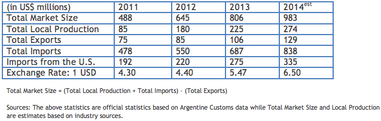

Market Estimates
Overview
Sub-Sector Best Prospects
Opportunities

In 2012, the Argentine electronic security sector market was valued at approximately $645 million dollars, making it a relatively large and growing sector for U.S. firms, especially in electronic security-related products, equipment, and services.
Despite the economic challenges facing the global economy, the electronic security sector in Argentina grew 31 percent in 2012. Local trade contacts estimate growth of 20 to 30 percent in 2013. This increase is largely attributed to rising crime, the high levels of perceived insecurity, and the increasing priority of improving workplace safety. This expansion has been seen in all sub-sectors of products and services of electronic security, especially for monitoring, CCTV over IP, intrusion control and law enforcement equipment, together totaling over 80 percent of electronic security imports to Argentina.
Hi-tech imports play a significant role in the overall security market, as domestic manufacturing is primarily focused on the production of basic security equipment and safety supplies. Thus, the hi-tech security equipment market presents the greatest opportunities for U.S. companies. The greatest potential for growth lies in such applications as online digital video surveillance and intelligent software with capabilities such as pausing, zooming, identification of specific objects and persons through facial expressions, thermal and night vision features.
2013 Sector Highlights:
• Important investments in device research and updating.
• Constant growth according to technological development. Greater awareness with regards to the relationship between ICT and Electronic Security.
• Increasing development and specialization per product or service offered.
• Argentina has outstanding human and technical resources in the security area.
• In the coming years market growth is expected as a result of the emergence of new technologies and better access possibilities for companies and users.
• Important development of activity segments with strong demand such as mining companies, oil companies, airports, as well as the development of intelligent buildings, urban monitoring and new regulations in the banking sector.
Return to Top
Hi-tech imports play a significant role in the overall security market, as domestic manufacturing consists primarily of basic security equipment and safety supplies. Therefore, the hi-tech security equipment market presents more opportunities for U.S. companies with major opportunities in niche areas such as CCTV, access control equipment on IP networks, and safety and security design consulting services for large buildings and other real estate developments.
Best sales prospects for U.S. electronic security firms include:
• Intelligent Surveillance Systems: smart cameras and intelligent software for identification of pedestrians; CCTV on IP networks-industry specific security systems; equipment parts and software for automotive, banking, airports, ports, warehouses, mines, highways, utilities, hospitals, and construction sites
• Access Control: biometrics on IP networks
• High-tech security equipment for Police and other law enforcement agencies.
• Safety and security design consulting services.
Return to Top
Market growth in recent years reflects the rising crime rate in Argentina. Acts of violence, including street crime, bank robberies, and private property theft, have been on the rise. While Argentina’s crime rate is lower than in the U.S., Brazil, Mexico, or Venezuela, crime is an issue that has been emphasized in the press. The widespread perception of growing insecurity, along with the increasing priority of improving workplace security, has contributed to the growth of the electronic security sector in Argentina, which grew 31 percent in 2012.
In addition to these changes, a trend has been to import parts for fire and safety equipment. Although there has been an increase of local assembly of alarms, detectors, and electronic fire systems to offer significantly lower prices and to take advantage of the “Buy Argentina” law and tax benefits, high-tech imports will continue to play a significant role in the overall security market, since domestic manufacturers tend to satisfy the demand for less sophisticated equipment.
Argentina continues to present many opportunities to U.S. exporters. However, recent controls imposed by the Argentine government have made exporting goods from any country to Argentina more difficult. It is important for would-be exporters to Argentina to confirm that their Argentine customer has received all the necessary permits (see “Trade Regulations and Standards” report for more information).
Return to Top